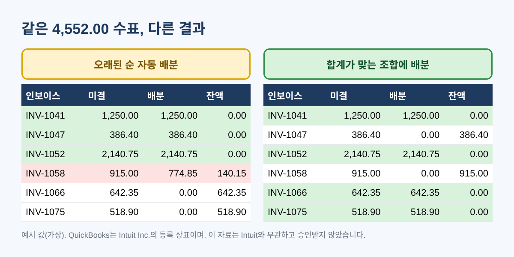
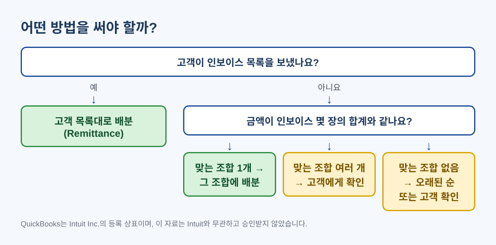
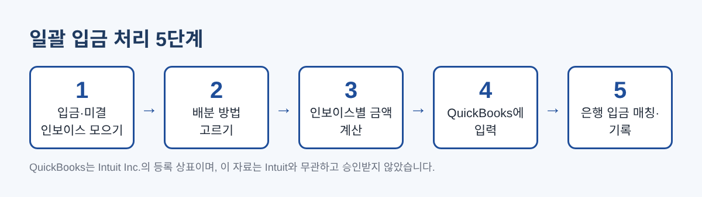

거래처가 4,552.00달러짜리 수표 한 장을 보내면서 아무 메모도 없습니다. 열려 있는 인보이스는 10장. 어느 인보이스를 갚은 걸까요? 잘못 짐작해서 입력하면 미수금 명세(A/R aging)에 엉뚱한 인보이스가 연체로 남고, 다음 달 거래명세서를 받은 고객은 헷갈리고, 실제로는 다른 인보이스 대금인 돈이 '크레딧'으로 떠 있게 됩니다. 도매, 공사, 에이전시처럼 같은 고객에게 한 달에도 여러 번 청구하는 사업장에서 자주 생기는 일입니다.
이 글에서는 엑셀이나 구글 시트로 직접 따라 할 수 있는 방법과, QuickBooks Desktop과 QuickBooks Online의 실제 입력 화면 순서를 정리했습니다.
이 글은 일반적인 교육용 정보이며 세무·법률·회계 자문이 아닙니다. 본인 사례는 공인 전문가와 확인하세요.
QuickBooks는 입금이 어느 인보이스에 해당하는지 정해야 합니다. Intuit 도움말에 따르면 QuickBooks Desktop에서 Automatically apply payments 설정이 켜져 있으면 입금은 가장 오래된 미결 인보이스부터 적용됩니다. 합리적인 기본값이지만, 고객은 보통 자기 쪽에서 승인한 인보이스를 갚지 가장 오래된 것부터 갚지는 않습니다. 이견이 있는 인보이스는 일부러 빼기도 하고, 최근 인보이스를 먼저 내기도 합니다.
해결 원칙은 간단합니다. Receive Payment 화면을 열기 전에 어느 인보이스인지 먼저 정하고, QuickBooks를 그 결정에 맞추는 것입니다.


| 상황 | 방법 | 적용 방법 |
|---|---|---|
| 고객이 인보이스 목록을 보냄 | 고객 명세(Remittance) | 목록의 금액대로, 각 인보이스 미결 잔액 한도 안에서 배분. 남는 금액은 고객 크레딧. |
| 목록은 없지만 인보이스 몇 장의 합계처럼 보임 | 맞는 조합 찾기 | 입금액과 정확히 같은 인보이스 묶음을 찾기(3-2단계). |
| 목록도 없고 맞는 조합도 없음 | 오래된 순 또는 고객 확인 | 만기일 순으로 배분, 마지막 인보이스는 일부 입금. 먼저 고객에게 묻는 곳도 많습니다. |
표 1. 배분 방법 고르기.
미결 인보이스를 만기일 순으로 2행부터 넣고, C열에 미결 잔액, F1 셀에 입금액을 넣습니다. D2에 다음 수식을 입력합니다.
=MAX(0, MIN(C2, $F$1 - SUM(D$1:D1)))
아래로 복사하면 각 행이 남은 입금액을 자기 잔액만큼 가져갑니다. 1행은 제목이라 SUM(D$1:D1)은 0에서 시작합니다. 남은 잔액은 E2에 =C2-D2, 남는 크레딧은 =MAX(0, F1-SUM(D:D))입니다.
인보이스가 n장이면 가능한 조합은 2n − 1개입니다(10장 = 1,023개, 12장 = 4,095개). 스프레드시트로 전부 검사할 수 있습니다.
=MOD(INT($A4/B$2),2)를 넣고 오른쪽·아래로 복사합니다. 1이면 그 인보이스가 조합에 들어간다는 뜻입니다.=SUMPRODUCT(B4:K4,$B$1:$K$1)을 넣습니다(K는 마지막 인보이스 열로 바꾸세요).딱 한 행만 남으면 그 조합일 가능성이 높지만 고객 자료와 한 번 더 비교하세요. 두 행 이상 남으면 금액만으로는 알 수 없으니 어느 인보이스를 낸 것인지 고객에게 확인해야 합니다.
| 인보이스 | 만기일 | 미결 잔액 |
|---|---|---|
| INV-1041 | 2026-09-13 | 1,250.00 |
| INV-1047 | 2026-09-28 | 386.40 |
| INV-1052 | 2026-10-10 | 2,140.75 |
| INV-1058 | 2026-10-24 | 915.00 |
| INV-1063 | 2026-11-02 | 1,478.20 |
| INV-1066 | 2026-11-14 | 642.35 |
| INV-1071 … INV-1082 | 2026년 11–12월 | 인보이스 4장 더 |
표 2. 예시 미결 인보이스(가상 값, 10장, 합계 11,507.35).
| 입금 | 방법 | 결과 |
|---|---|---|
| 수표 4,552.00, 메모 없음 | 맞는 조합 찾기 | 1,023개 중 1개 일치: INV-1041, 1052, 1066, 1075 완납 |
| ACH 5,000.00, 내역 없음 | 오래된 순 | 1041·1047·1052·1058 완납, INV-1063에 307.85 (잔액 1,170.35) |
| 송금 4,900.00, 목록 합계 4,854.35 | 고객 명세 | 목록 금액대로 배분, 45.65는 고객 크레딧, INV-1078은 25.00 부족 |
표 3. 같은 고객의 입금 3건과 방법별 결과(예시 값).
'대충 맞으면 된다'는 허용 오차는 조심하세요. 고객이 뗀 송금 수수료를 잡으려고 오차를 주면 맞는 조합이 늘어납니다. 예시에서 4,527.00에 오차 30.00을 주면 조합 12개가 해당됩니다. 특별한 이유가 없으면 오차는 0으로 두고, 덜 들어온 금액은 수수료나 할인으로 처리하기 전에 이유부터 확인하세요.
QuickBooks가 인보이스를 자동으로 고르지 않게 하려면 Edit > Preferences > Payments > Company Preferences의 Receive Payments 항목에서 Automatically apply payments 체크를 해제합니다. 이미 잘못된 인보이스에 적용됐다면, Intuit 도움말은 인보이스를 열고 Transaction History로 입금 거래를 연 다음 잘못된 인보이스 체크를 풀고 맞는 인보이스를 체크하는 방법을 안내합니다.
관련 설정은 Settings > Account and settings > Advanced > Automation > Automatically apply credits에 있습니다. Intuit에 따르면 이 설정이 켜져 있으면 크레딧이 가장 오래된 미결 인보이스부터 적용되므로, 크레딧이 엉뚱한 인보이스에 붙는다면 확인해 보세요.

QuickBooks Online에서 은행 피드가 이미 입금을 인보이스 한 장에 매칭해 게시했다면, Intuit 설명대로 Posted 탭에서 Undo로 취소할 수 있습니다. 그다음 맞는 인보이스 전체에 입금을 기록하고 다시 매칭하세요. QuickBooks Desktop 은행 피드 화면은 방식이 다릅니다. 입금일·고객·참조번호·금액·갚은 인보이스·남는 금액·입력 여부·매칭 여부를 적는 간단한 기록부를 두면 덜 들어오거나 더 들어온 금액을 놓치지 않습니다.
일반적으로 Receive Payment 한 건은 고객 한 명에게 속합니다. 본사가 여러 지점(각각 별도 고객이나 Job으로 등록된 경우) 대금을 한 번에 낸 경우, 고객별로 입금을 따로 기록하고 하나의 입금(deposit)으로 묶는 방식을 많이 씁니다. 회사 파일 구조를 먼저 확인하세요.
고객이 뗀 수수료, 조기 결제 할인, 고객 쪽에서 먼저 적용한 크레딧, 다른 고객의 인보이스인지 살펴보세요. 그래도 설명이 안 되면 오래된 순으로 배분하거나 크레딧으로 두고 고객에게 문의하세요.
아닙니다. 고객이 내역을 주지 않았을 때 흔히 쓰는 기본 방법입니다. 실제로 고객이 낸 인보이스와 다를 때만 문제가 됩니다.
인보이스가 한 장 늘 때마다 조합 수가 두 배가 되므로, 일반 수식으로는 12–15장 정도가 현실적인 한계입니다. 금액상 가능성이 있는 인보이스부터 넣으세요.
위 과정을 그대로 해 주는 고객 일괄 입금 배분기 2026은 아래 무료 키트 다운로드에서 가입 없이 무료로 받으실 수 있습니다(엑셀 + PDF 가이드).
면책 안내. 이 글은 고객 입금 기록에 관한 일반적인 교육용 정보이며 세무·법률·회계 자문이 아니고 어떤 결과도 보장하지 않습니다. 사업마다 처리 방법이 다를 수 있으므로 본인 사례는 공인 전문가와 확인하세요. QuickBooks 메뉴 이름은 바뀔 수 있으며, 2026-11-24 기준 Intuit 도움말과 대조했습니다. QuickBooks는 Intuit Inc.의 등록 상표이며, 이 글은 Intuit와 무관하고 승인받지 않았습니다.
QuickBooks is a registered trademark of Intuit Inc.; not affiliated with or endorsed by Intuit.